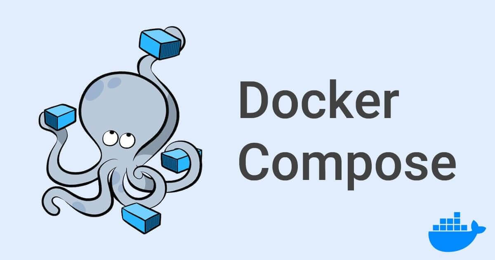

Docker Compose 預設會建立 default network，這篇會告訴你如何自訂 network、如何使用現有的 network，以及如何自訂 network 名稱。
Docker Compose 預設會幫你的應用程式設定一個 network，service 的每個容器都會加入 default network，並且該 network 上的其他容器都可以連接 (reachable) 以及發現 (discoverable) 與容器名稱相同的 hostname。
預設的 network 名稱是基於 “專案目錄名稱”，並加上 _default。例如：你的應用程式放在名為 myapp 的專案目錄中，而 docker-compose.yml 的內容如下：
1 | |
當你執行 docker-compose up 指令時，會發生以下情況：
- 建立一個名為
myapp_default的 network - 使用
web的設定建立容器，並以web這個名稱加入名為myapp_default的 network - 使用
db的設定建立容器，並以db這個名稱加入名為myapp_default的 network
當然你也可以使用 --project-name (可簡寫成 -p ) 參數 或使用 COMPOSE_PROJECT_NAME 這個 環境變數 來複寫專案名稱。
現在，每個容器都可以找到名為 web 或 db 的 hostname，並獲得對應容器的 IP 位址。例如：web 的應用程式的程式碼可以連接到 postgres://db:5432 的 URL，並開始使用 Postgres 資料庫。
不過要注意 HOST_PORT 和 CONTAINER_PORT 之間的差別。以上面範例中的 db 來說，HOST_PORT 是 8001，CONTAINER_PORT 是 5432 (postgres 的預設 port)。Networked service-to-service 通訊使用 CONTAINER_PORT。定義 HOST_PORT 之後，service 也可以在 swarm 外部存取。
在 web 的容器中，如果要連接到 db 的連接字串會看起來像是 postgres://db:5432 這樣，而從 host machine 來看，連接字串看起來像是 postgres://{DOCKER_IP}:8001。
更新容器
如果有變更 service 的設定，請執行 docker-compose up 指令來更新 service，它會刪除舊的容器，而新容器會以不同的 IP 位址加入相同名稱的 network。執行中的容器可以找到該名稱並連接到新的 IP 位址，而舊的 IP 位址就無法使用。
如果任何容器對舊容器開放連線，那這些容器就會被關閉連線。容器有責任檢測這個情況，再次找到名稱並重新連接。
Links
link 到另一個 service 中的容器。透過 link 可以指定 service 名稱和 link 別名 ( SERVICE:ALIAS ），或僅指定 service 名稱。透過該別名可以從其他 service 存取到 service。link 不需要啟用 service 進行通訊 - 預設情況下，任何 service 都可以通過該 service 的名稱存取任何其他 service。
鏈接 (linked) service 的容器可在別名相同的 hostname 上存取，如果未指定別名，則可以存取 service 名稱。
在下面範例中，可以從 web 的 hostname db 和 database 存取到 db：
1 | |
link 和 depends_on 都是以相同的方式表達 service 之間的依賴關係，因此可以使用它們來決定 service 啟動的順序。
- 如果同時定義
links和networks，則它們之間具有links的 service 必須共享至少一個共同的網絡才能進行通訊。建議使用 network - 在 swarm 模式下使用 Compose 檔案 (v3) 部署 stack 時，會忽略
links這個 option
--link 參數為 legacy 功能，可能會被刪除。不建議使用 --link，建議使用 user-defined networks (使用者定義的網路) 來促成兩個容器之間的溝通。user-defined networks 不支援你用 --link 參數在容器之間共享環境變數。但是，你可以使用其他機制 (例如：volume)，以更可控的方式在容器之間共享環境變數。
詳情可參考官方的 Compose file version 3 reference | Docker Documentation 文件。
Multi-host networking
注意：本節中的說明只適用於 legacy Docker Swarm 的相關操作，並且只有目標為 legacy Swarm 叢集才有用。有關將 compose 專案部署至較新的整合 swarm mode，請參考Docker Stacks 文件。
將 Compose 應用程式部署至 Swarm 叢集 時，可以使用內建的 overlay driver 在容器之間啟用 multi-host 通訊，而無需更改 Compose 檔案或應用程式的程式碼。
想了解如何設定 Swarm 叢集可參考官方的 Multi-host networking 這篇。叢集預設是使用 overlay driver，不過也可以參考下一節指定其他 driver。
指定自定 network
若不想使用預設的 app network，可以使用 top-level networks key 來指定自己的 network，讓你可以建立更複雜的拓撲，並指定 custom network driver 和 option。還可以使用它，將 service 連接到不由 Compose 管理，而是由外部建立的 network。
每個 service 都可以使用 service-level networks key 指定要連接的 network，該 key 是引用至 top-level networks key 下的名稱。
以下面定義的兩個自定 network 的 Compose 檔案為例，proxy service 與 db service 隔離，因為它們不共享共同的 network，只有 app 可以與兩者溝通：
1 | |
通過為每個連接 (attached) 的 network 設定 ipv4_address 和/或 ipv6_address，可以為 network 設定靜態 IP 位址。
設定 default network
透過在 top-level networks key 內，名為 default network 下定義 entry，來更改應用程序範圍 (app-wide) 的 default network 的設定：
1 | |
使用 pre-existing network
如果希望容器加入預先定義好的 network，就可以使用 external option。
如果 external 設為 true，就會指定已在 Compose 之外先建立的那個 network，所以 docker-compose up 不會嘗試建立此 network。
如果此 network 不存在，會因為找不到參考的目標 network 而發生錯誤。錯誤如下：
1 | |
如果找不到此 network，可以執行 docker network create [network_name] 來建立 network。
在 Compose v3.3 以及更舊版的檔案格式下，external 不能跟其他 network configuration keys 一起使用，包括：driver、driver_opts、ipam 和 internal 。Compose v3.4 以及更新版的格式就沒有這個限制。
下面範例的 Compose 會找到名為 my-network-name 的已存在的 network，並將應用程式的容器連接到該 network，這樣就不會嘗試建立一個名為 [projectname]_default 的 network：
1 | |
在下面範例中，proxy 是通往外部世界的 gateway，所以不需要建立一個名為 [projectname]_outside 的 network。Compose 會找到一個名為 outside 的已存在的 network，並將 proxy service 的容器連接到 outside network。
1 | |
下面範例的 Compose 不會嘗試建立一個名為 [projectname]_default 的 network，Compose 會找到名為 my-pre-existing-network 的 network，並將應用程式的容器連接到該 network。
1 | |
external.name 在 Compose v3.5 檔案格式 中已被棄用，請改用同版本新增的 name，下一節會說明。
自訂 network 名稱
network 也可以自訂名稱，name 屬性可引用包含特殊字元的 network。
下面以這個 Compose 為例，介紹如何自訂 network 名稱：
1 | |
- 先把 Compose 裡面的
version改成 3.5 以上，因為在 v3.5 版才開始提供自訂 network 名稱 (也就是增加name屬性) - 在 service-level
networkskey 裡面 (也就是自訂的 service 內的networks)，加入自訂的 network 名稱 (此範例為my-network) - network 的詳細定義是寫在 top-level
networkskey (也就是通常寫在檔案最後面的networks) 裡面。這裡的 network 名稱要和 service-levelnetworkskey 裡面自訂的名稱對應 (也就是my-network這個 network 名稱要和上面services內的一樣)，在my-network下面就可以使用name屬性來自定 network 名稱 (my-app-network就是你真正自訂的 network 名稱 )
詳情可參考官方的 Compose file version 3 reference | Docker Documentation 文件。
也可以與 external 屬性一起使用：
1 | |
討論區